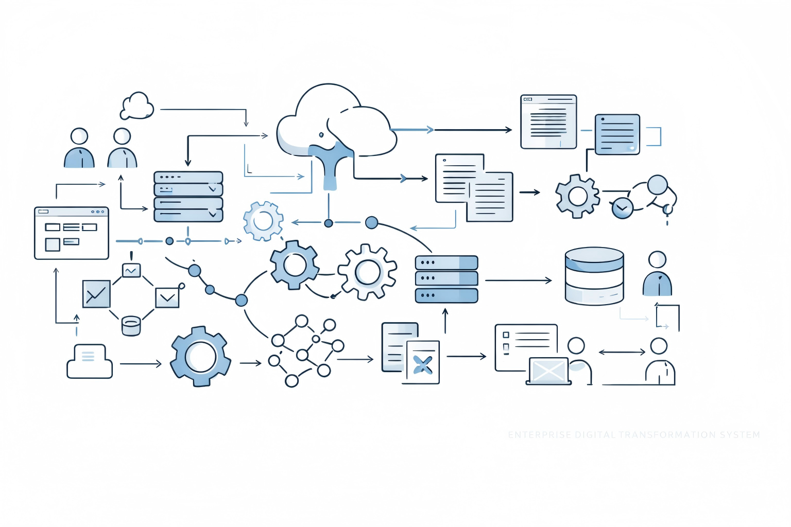
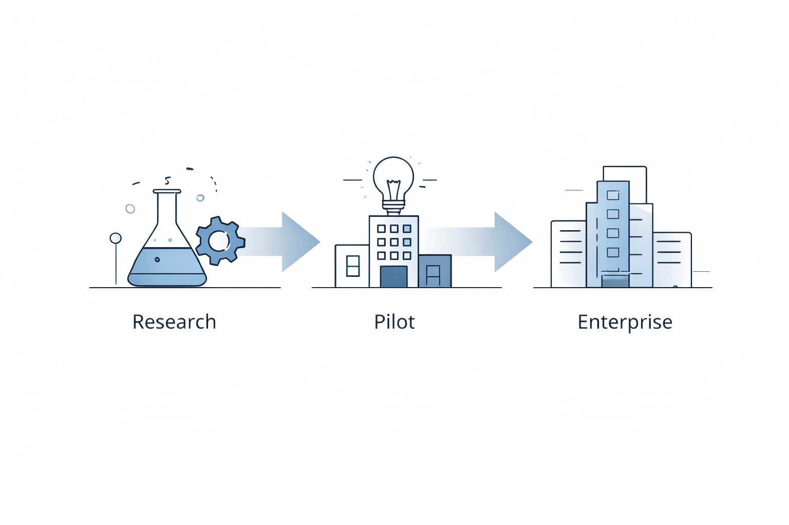
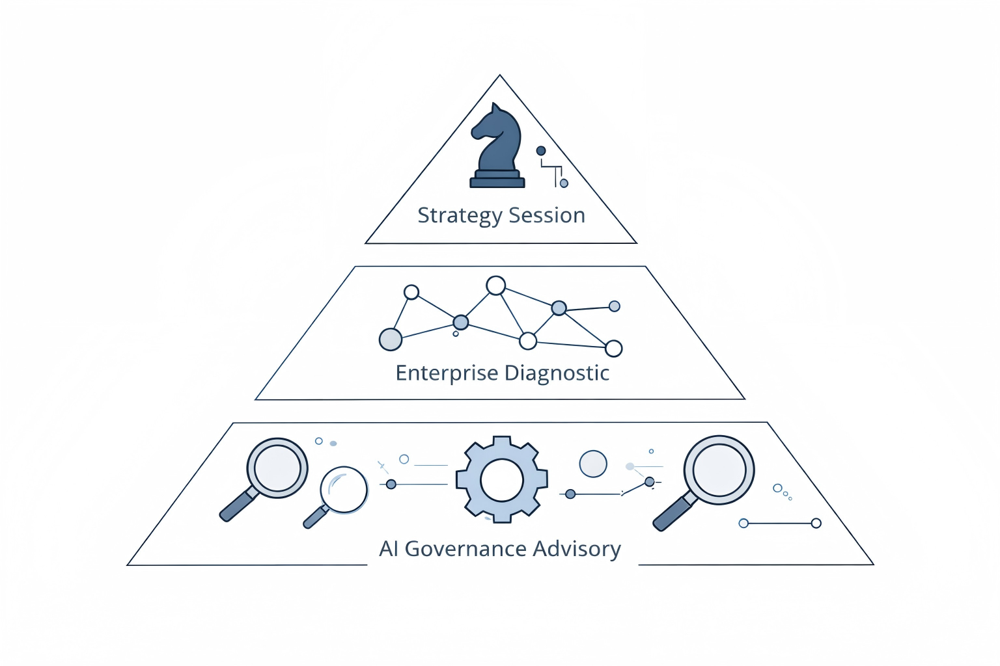
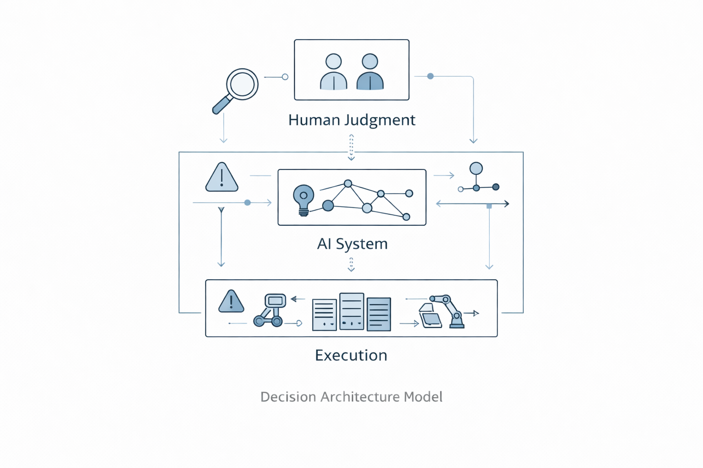

Enterprise AI Governance and Decision Architecture Advisory.
We help organizations design stable decision systems for digital transformation in complex operational environments.
Digital transformation often fails not because of technology limitations but because organizations lack stable decision architecture.
As AI accelerates operational execution, enterprises must redesign governance structures, decision responsibilities, and human-AI collaboration models.

Most digital transformation consulting focuses on software implementation, automation tools, or workflow optimization.
Our work focuses on decision architecture: how organizations maintain stable judgment, clear responsibility, and governance structures while integrating AI into operational systems.
This approach is particularly relevant for organizations facing increasing complexity, fragmented AI adoption, and unclear responsibility within automated environments.
Our approach integrates complex systems research with real operational environments to understand how organizations remain stable under increasing automation and AI integration.
Research insights are translated into pilot programs and enterprise advisory models for practical implementation.

Strategic discussions with leadership teams exploring AI governance challenges, digital transformation risks, and decision architecture design.
Structural analysis of organizational decision systems, automation workflows, operational complexity, and governance gaps.
Design governance frameworks enabling responsible AI deployment and stable human-AI decision environments.

Engagements typically begin with a strategic discussion identifying current transformation challenges, governance risks, and operational complexity.
Diagnostic analysis may follow to examine decision flows, responsibility structures, automation processes, and workforce adaptation requirements.
Long-term advisory work focuses on governance design, decision architecture development, and sustainable enterprise transformation strategies.
Enterprise stability in AI-mediated environments depends on clearly defined relationships between human judgment, automated systems, and operational execution layers.

Xufen Tu is an independent interdisciplinary researcher specializing in complex systems, AI governance, and decision architecture.
Her work focuses on governance models and decision stability in AI-mediated organizational environments.
Enterprise collaboration and advisory inquiries:
Email: contact@bb369tech.com
LinkedIn: https://www.linkedin.com/in/xufentu